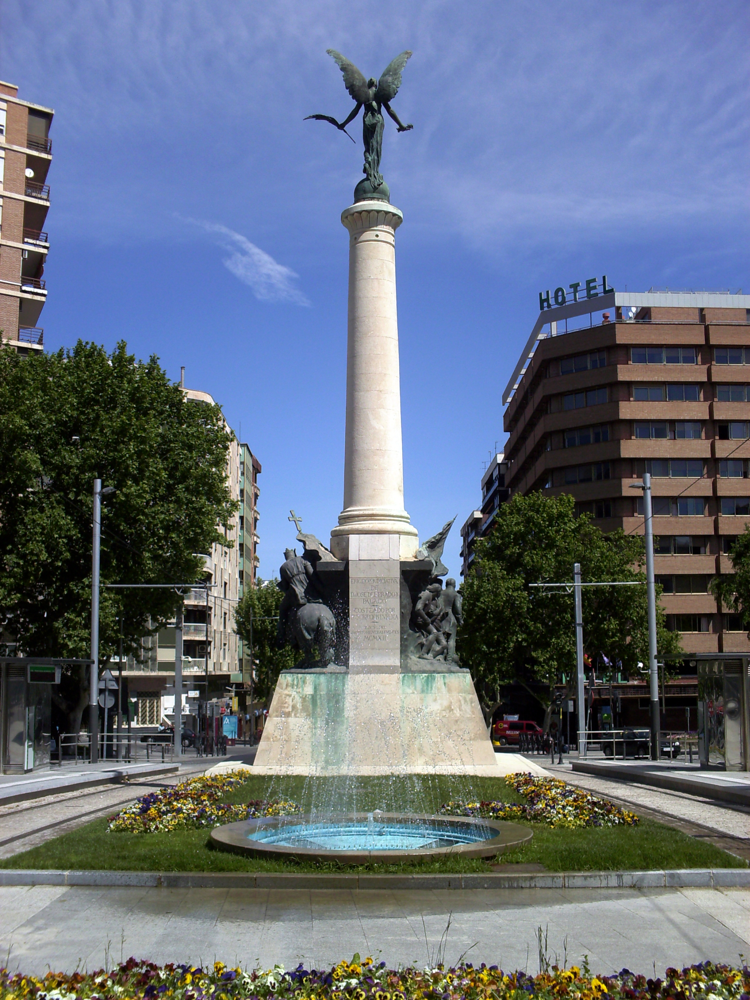

El Monumento a las Batallas es un monumento conmemorativo de las grandes batallas acaecidas en la provincia de Jaén, la Batalla de las Navas de Tolosa y la Batalla de Bailén. Se encuentra en la capital provincial, en el centro de la Plaza de las Batallas, en el Paseo de la Estación, frente al Parque de la Concordia y a la Subdelegación del Gobierno.
Su nombre se debe a que conmemora dos batallas transcendentales:
El monumento es obra del escultor jienense Jacinto Higueras, que presentó la maqueta en la Exposición Nacional de 1910 y por el que recibió la medalla de plata por el grupo representativo de la Batalla de Bailén.
Consiste en un plinto trapezoidal, sobre el que se levanta un pedestal con dos relieves laterales en bronce, alusivos a ambas gestas. El de las Navas muestra un grupo de rotundos guerreros, con cuya masa parecen sugerir un movimiento de caballería pesada. Por el contrario, el de Bailen ofrece un dinamismo y anécdota mayor, propia de un concepto romántico de la escultura decimonónica. Del centro arranca una columna palmiforme egipcia rematada en una Atenea-Niké, diosa helénica de la Victoria, esculpida de bronce con las alas desplegadas y personificando el Triunfo.
El Monumento fue inaugurado el 20 de octubre de 1912.